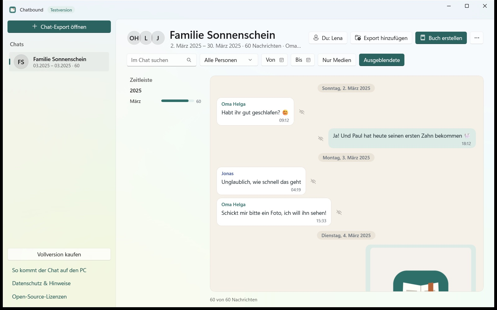
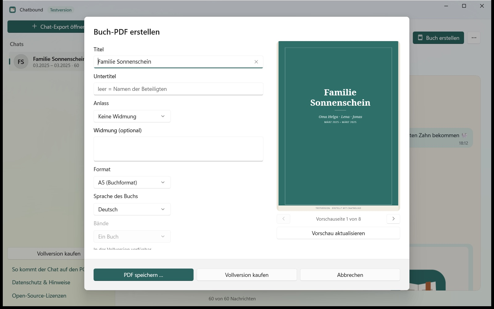
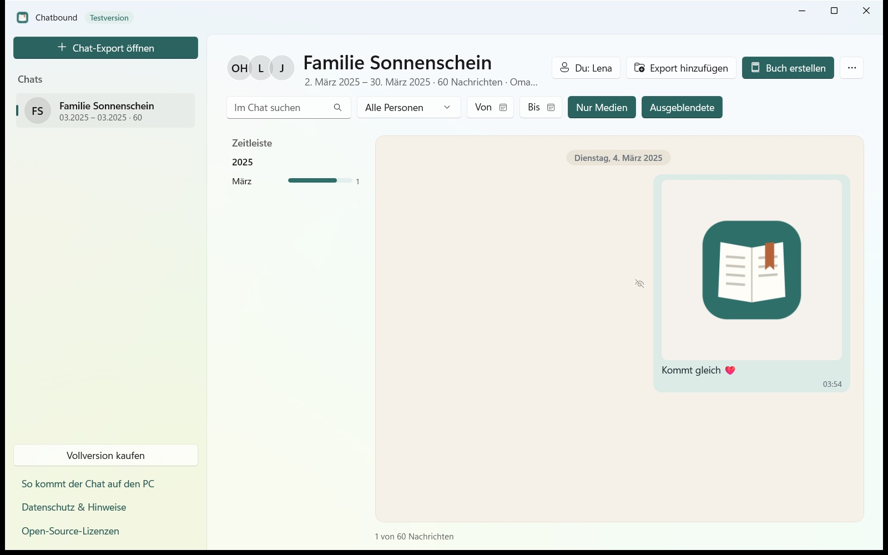

Jahre voller Nachrichten, Fotos und Insider verschwinden sonst irgendwo im Handy. Chatbound macht exportierte Chats auf deinem PC durchsuchbar, führt mehrere Exporte zusammen und setzt daraus ein Buch als PDF. Years of messages, photos and in-jokes otherwise get lost somewhere on your phone. Chatbound makes exported chats searchable on your PC, merges several exports and turns them into a book PDF.
Kostenlos testen: Die Testversion setzt die ersten 20 Buchseiten mit einem kleinen Hinweis in der Fußzeile.Try it free: the trial creates the first 20 book pages with a small notice in the footer.
Windows 10 und 11 · x64 und ARM · 10 SprachenWindows 10 and 11 · x64 and ARM · 10 languages

Screenshots show the German interface with made-up sample data. The app follows your Windows language.
Screenshots mit erfundenen Beispieldaten.
Volltextsuche, Filter nach Person und Zeitraum, Zeitleiste und eine Ansicht nur für Medien.
Full-text search, filters by person and date range, a timeline and a media-only view.
Ein Export enthält nur die neuesten Nachrichten. Exportierst du regelmäßig, fügt Chatbound alles ohne Duplikate zu einem Chat zusammen.
An export contains only the latest messages. Export regularly and Chatbound merges everything into one chat without duplicates.
Einzelne Nachrichten lassen sich fürs Buch ausblenden, und Fotos nimmst du mit oder lässt sie weg.
Hide individual messages from the book, and include or leave out photos.
Titelseite, Inhaltsverzeichnis, ein Kapitel pro Monat und eine Abschlussseite in Zahlen, mit Emojis und Fotos.
Title page, table of contents, one chapter per month and a closing “In numbers” page, with emojis and photos.
A5-Format, wählbare Bände und optional 3 mm Beschnitt für Druckdienste. Das Drucken selbst organisierst du.
A5 format, optional volumes and 3 mm bleed for print services. You arrange the printing yourself.
Keine Telemetrie, kein Konto, kein Upload. Deine Chats bleiben auf deinem PC.
No telemetry, no account, no upload. Your chats stay on your PC.
Titel, Anlass, Widmung, Sprache und Bände stellst du selbst ein. Die Vorschau zeigt sofort, wie die Seiten aussehen.
Set the title, occasion, dedication, language and volumes yourself. The preview shows right away how the pages will look.


Mit einem Klick siehst du nur noch die Medien eines Chats, statt dich durch Tausende Nachrichten zu scrollen.
With one click you see only a chat's media instead of scrolling through thousands of messages.
Nein. Chatbound verarbeitet alles auf deinem PC. Nur Kauf und Lizenzprüfung laufen über den Microsoft Store. Mehr dazu unter Datenschutz.
No. Chatbound processes everything on your PC. Only the purchase and licence check go through the Microsoft Store. See Privacy.
WhatsApp begrenzt Exporte auf rund 40.000 Nachrichten, mit Medien auf rund 10.000. Was nicht im Export steht, kann auch Chatbound nicht anzeigen. Ältere Exporte lassen sich aber dazunehmen.
WhatsApp limits exports to about 40,000 messages, or about 10,000 with media. Chatbound can't show what isn't in the export, but you can add older exports.
Nein, dafür ist es nicht gedacht. Das Buch ist eine Erinnerung und bestätigt weder Echtheit noch Vollständigkeit eines Chats.
No, that isn't its purpose. The book is a keepsake and doesn't confirm that a chat is authentic or complete.
Chats enthalten auch Nachrichten und Fotos anderer Menschen. Frag die Beteiligten bitte vorher.
Chats also contain other people's messages and photos. Please ask those involved first.
Fragen oder Fehler? Schreib an mip@gmx.biz. Bitte schick uns keine Chat-Dateien.
Questions or bugs? Write to mip@gmx.biz. Please don't send us chat files.
Chatbound ist ein unabhängiges Programm und steht in keiner Verbindung zu WhatsApp oder Meta. WhatsApp ist eine Marke von WhatsApp LLC.Chatbound is an independent program and is not affiliated with WhatsApp or Meta. WhatsApp is a trademark of WhatsApp LLC.